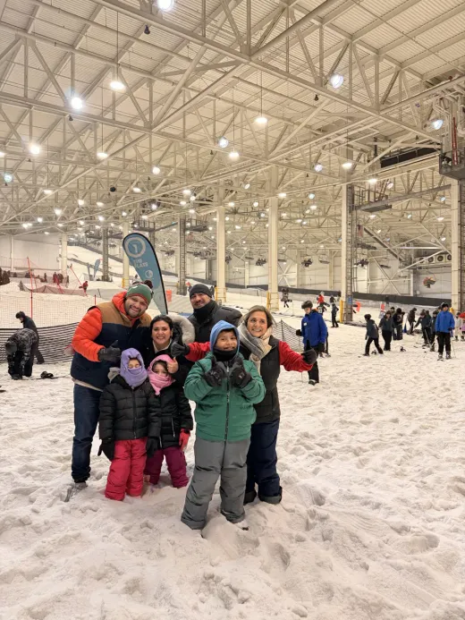

El lado humano · sin filtros corporativos
Quién soy cuando cierro el portátil.
Inicio te cuenta qué hago. Esta te cuenta quién lo hace: un bogotano que colecciona formas de mirar el mundo y que, en el fondo, solo quiere una vida con significado y tiempo para gozársela.

Nunca aprendí a ser una sola cosa.
Soy bogotano y economista de formación, pero la verdad es que colecciono formas de mirar el mundo: economía, historia, una maestría en IA, y de paso filosofía y antropología sin pedirle permiso a nadie.
De niño desarmé el equipo de sonido de la casa para entender dónde vivía la música. No lo arreglé — pero la pregunta nunca se me quitó, y es la misma que me pagan por responder hoy: ¿por qué esto hace lo que hace?
Me subí dos veces a hacer stand‑up frente a desconocidos. Así presento resultados: o se ríen o no se ríen, sin dashboard que maquille.
Pruebas de vida.


